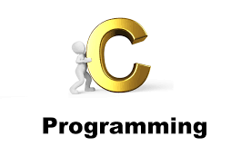
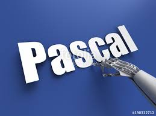
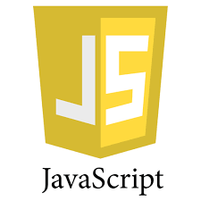
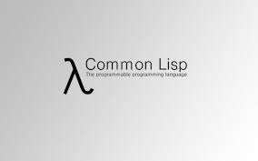
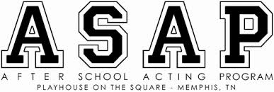

The meaning of the word 'paradigm', and we will enumerate the main programming paradigms, as we see them.
Programming Technique
Related to an algorithmic idea for solving a particular class of problems Examples: 'Divide and conquer'
and 'program development by stepwise refinement'
Programming Style
The way we express ourselves in a computer program Related to elegance or lack of elegance
Programming Culture
The totality of programming behavior, which often is tightly related to a family of programming languages The sum of a main
paradigm, programming styles, and certain programming techniques.
A main programming paradigm stems an idea within some basic discipline which is relevant for performing computations
Main programming paradigms
Imperative Paradigm
Functional Paradigm
Logical Paradigm
Object-Oriented Paradigm
imperative paradigm
First do this and next do that The 'first do this, next do that' is a short phrase which really in a nutshell
describes the spirit of the imperative paradigm. The basic idea is the command, which has a measurable effect
on the program state. The phrase also reflects that the order to the commands is important. 'First do that, then
do this' would be different from 'first do this, then do that'. In the itemized list below we describe the main
properties of the imperative paradigm.


ALGOL
C
FORTRAN
PASCAL
functional paradigm
We here introduce the functional paradigm at the same level as imperative programming was introduced. Functional programming
is in many respects a simpler and more clean programming paradigm than the imperative one. The reason is that
the paradigm originates from a purely mathematical discipline: the theory of functions. As described, the imperative
paradigm is rooted in the key technological ideas of the digital computer, which are more complicated, and less
'clean' than mathematical function theory. Below we characterize the most important, overall properties of the
functional programming paradigm. Needless to say, we will come back to most of them in the remaining chapters
of this material. Evaluate an expression and use the resulting value for something Characteristics: Discipline
and idea Mathematics and the theory of functions The values produced are non-mutable Impossible to change any
constituent of a composite value As a remedy, it is possible to make a revised copy of composite value Atemporal
Time only plays a minor role compared to the imperative paradigm Applicative All computations are done by applying
(calling) functions The natural abstraction is the function Abstracts a single expression to a function which
can be evaluated as an expression Functions are first class values Functions are full-fledged data just like
numbers, lists, ... Fits well with computations driven by needs Opens a new world of possibilities


JAVA SCRIPT
LISP
PYTHON
SCALA
logical paradigm
The logical paradigm is dramatically different from the other three main programming paradigms. The logical paradigm fits
extremely well when applied in problem domains that deal with the extraction of knowledge from basic facts and
relations. The logical paradigm seems less natural in the more general areas of computation. Answer a question
via search for a solution Below we briefly characterize the main properties of the logical programming paradigm.
Characteristics: Discipline and idea Automatic proofs within artificial intelligence Based on
axioms, inference rules, and queries. Program execution becomes a systematic search in a set of facts, making
use of a set of inference rules

ASAP
DATA LOG
PROLOG
object-oriented paradigm
&emsp The object-oriented paradigm has gained great popularity in the recent decade. The primary and most direct reason is undoubtedly
the strong support of encapsulation and the logical grouping of program aspects. These
properties are very important when programs become larger and larger. The underlying, and somewhat deeper reason
to the success of the object-oriented paradigm is probably the conceptual anchoring of the paradigm. An object-oriented
program is constructed with the outset in concepts, which are important in the problem domain of interest. In
that way, all the necessary technicalities of programming come in second row. Send messages between objects to
simulate the temporal evolution of a set of real world phenomena As for the other main programming paradigms,
we will now describe the most important properties of object-oriented programming, seen as a school of thought
in the area of computer programming.
Characteristics: Discipline and idea The theory of concepts, and models of human interaction with
real world phenomena Data as well as operations are encapsulated in objects Information hiding is used to protect
internal properties of an object Objects interact by means of message passing A metaphor for applying an operation
on an object In most object-oriented languages objects are grouped in classes Objects in classes are similar enough
to allow programming of the classes, as opposed to programming of the individual objects Classes represent concepts
whereas objects represent phenomena Classes are organized in inheritance hierarchies Provides for class extension
or specialization This ends the overview of the four main programming paradigms. From now on the main focus will
be functional programming in Scheme, with special emphasis on examples drawn from the domain of web program development.